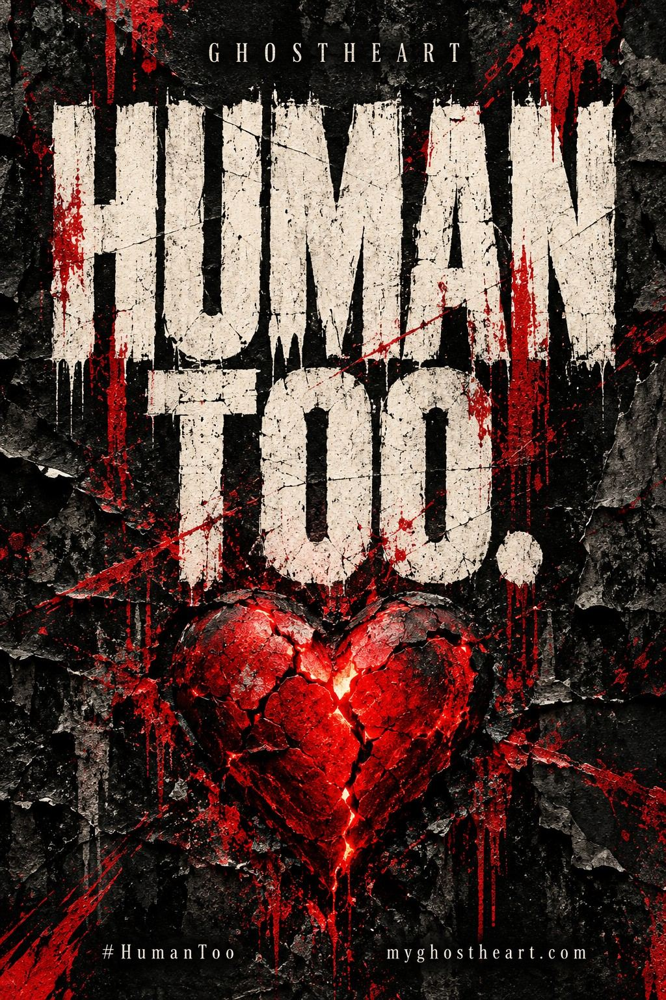
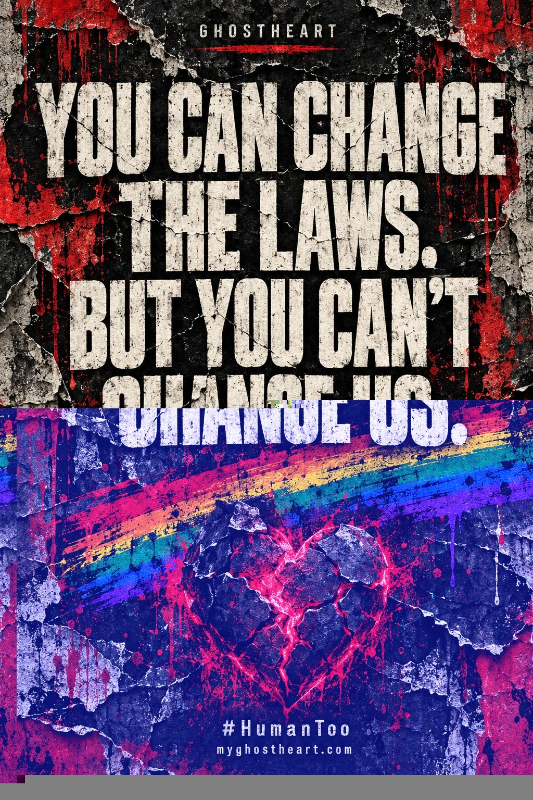
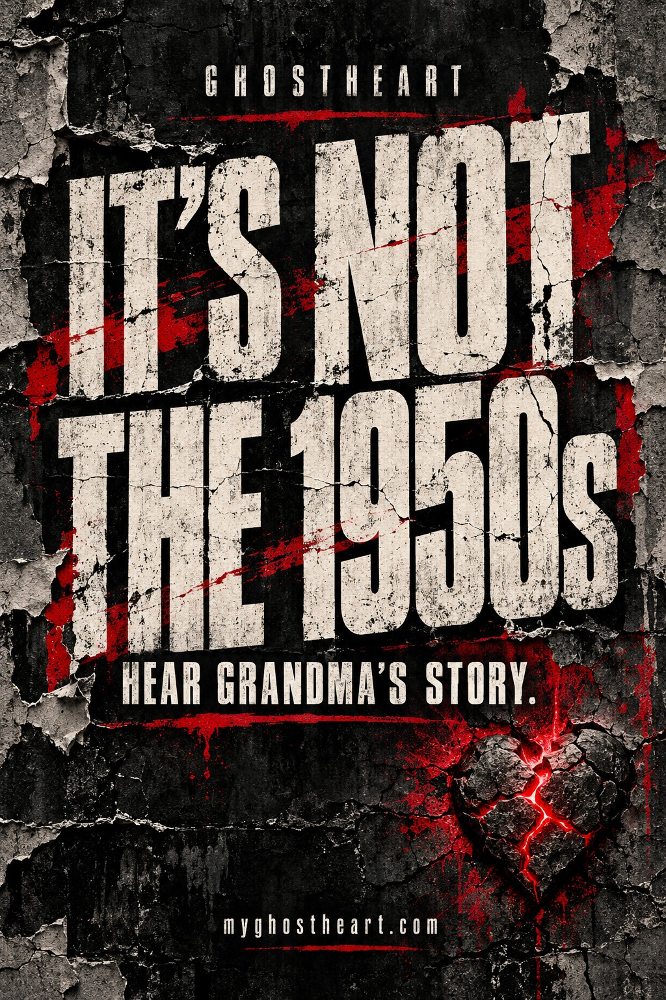

HUMAN TOO
A person is more than a label. Hear the recording and find your way through the GhostHeart music.
EXPLORE THE MUSIC ↗A line can carry what a clean introduction never will. Save the artwork. Follow what hits into the music and the life behind GhostHeart.

A person is more than a label. Hear the recording and find your way through the GhostHeart music.
EXPLORE THE MUSIC ↗
You can change the laws, but you can’t change us. Identity, love, and a refusal to disappear.
HEAR THE MUSIC ↗
Grandma remembers the people behind the victory speeches. Hear the story and the human cost.
HEAR GRANDMA’S STORY ↗#HumanToo · One life. Many stories. Same heart.